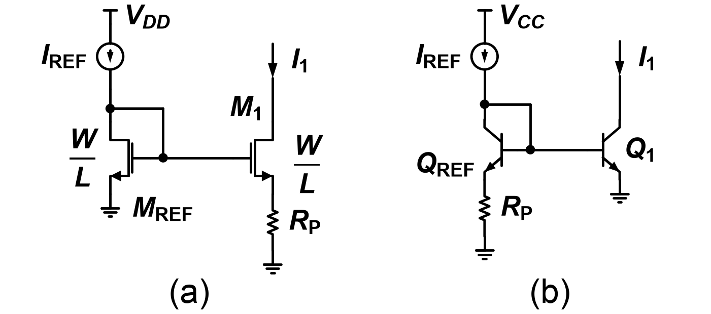

축퇴 저항 R_P로 복사 전류비를 정하는 MOS·바이폴라 전류 거울
주어진 조건
- $V_{TH}$는 모두 같음
- $\lambda = 0$, $V_A = \infty$로 가정
- (1) 전용 (회로 (a)): $M_{REF} = M_1 = W/L$ (두 트랜지스터의 크기가 같음)
- (2) 전용 (회로 (b)): $Q_{REF} = Q_1$ (두 트랜지스터가 같음), 베이스 전류는 무시
- $I_{REF}$, $V_{DD}$, $V_{CC}$의 값은 주어지지 않음. 답은 기호로 나타냄
구할 것
- (1) 회로 (a)에서 $I_1 = I_{REF}/2$가 되는 $R_P$ 값 (식으로)
- (2) 회로 (b)에서 $I_1 = 2 I_{REF}$가 되는 $R_P$ 값 (식으로)

원문 보기
다음 회로에 대해 질문에 답하시오. $V_{TH}$는 동일하고, $\lambda = 0$, $V_A = \infty$로 가정한다.
(1) 회로 (a)에서 $I_1 = I_{REF}/2$가 되는 $R_P$ 값을 식으로 구하시오. 단, $M_{REF} = M_1 = W/L$이다.
(2) 회로 (b)에서 $I_1 = 2I_{REF}$가 되는 $R_P$ 값을 식으로 구하시오. 단, $Q_{REF} = Q_1$이고, 베이스 전류는 무시한다.
문제를 내 말로 읽어요
두 그림은 저항의 위치가 달라요. MOS에서는 복사 소자의 소스가 올라가 전류를 줄이고, BJT에서는 기준 소자의 이미터를 올려 상대적으로 출력 전류를 키워요. 전원값을 찾는 문제가 아니라 두 소자의 제어 전압 차이를 저항 전압으로 바꾸는 문제예요.
이 문제를 봤을 때 떠올릴 개념과 공식
“같은 크기인데 다른 전류”라는 단서에서는 단순 면적비 대신 축퇴(degeneration)를 떠올려요. MOS는 $I_D=K(V_{GS}-V_{TH})^2/2$, $K=\mu_nC_{ox}(W/L)$이며 $K$의 단위는 $\mathrm{A/V^2}$예요. BJT는 $I_C=I_S e^{V_{BE}/V_T}$이고 $V_T$는 열전압이에요.
$\lambda=0$, $V_A=\infty$라 출력 단자 전압의 영향은 없어요. 게이트·베이스가 공통이어도 소스·이미터 높이가 다르면 $V_{GS}$·$V_{BE}$는 달라요. 따라서 각 소자 전압을 전류로 표현한 뒤 KVL을 쓰는 것이 첫 도구예요.
종이에 적는 실제 첫 줄
그림 (a)의 공통 게이트에서 접지까지 두 경로를 적어요: $V_{GS,REF}=V_{GS1}+I_1R_P$. 그림 (b)는 저항이 기준 쪽에 있으므로 $V_{BE1}=V_{BE,REF}+I_{REF}R_P$로 시작해요.
왜 이렇게 푸는지 함께 따라가요
(1)
$I_1=I_{REF}/2$를 제곱 법칙의 역함수에 넣어요.
$$V_{GS,REF}=V_{TH}+\sqrt{2I_{REF}/K}$$
$$V_{GS1}=V_{TH}+\sqrt{I_{REF}/K}$$
두 문턱 전압이 같으므로 빼면 지워져요. 남은 전압이 소스 저항의 전압이에요.
$$\frac{I_{REF}}2R_P=(\sqrt2-1)\sqrt{I_{REF}/K}$$
$$R_P=\frac{2(\sqrt2-1)}{\sqrt{K I_{REF}}}$$
출력 전류가 더 작아야 하므로 양의 소스 전압을 만드는 양의 저항이 나와요.
(2)
동일 BJT의 두 지수식을 나누면 알려지지 않은 $I_S$가 없어져요.
$$\frac{I_1}{I_{REF}}=\exp\!\left(\frac{V_{BE1}-V_{BE,REF}}{V_T}\right)$$
목표 비가 2이므로 전압 차이는 $V_T\ln2$예요. 베이스 전류를 무시하면 기준 이미터 저항에도 $I_{REF}$가 흘러요.
$$I_{REF}R_P=V_T\ln2$$
$$R_P=\frac{V_T\ln2}{I_{REF}}$$
여기에서 저항 전류를 출력의 $2I_{REF}$로 놓지 않아요. 저항이 기준 가지에 있기 때문이에요.
완성 답과 검산
(1)
$R_P=2(\sqrt2-1)/\sqrt{\mu_nC_{ox}(W/L)I_{REF}}$예요. $\sqrt{K I_{REF}}$의 단위는 A/V이므로 역수는 Ω예요. 결과를 첫 KVL에 다시 넣으면 소스 상승분이 두 과구동 차이와 정확히 같아요. $R_P=0$인 경우에는 두 $V_{GS}$가 같아져 전류비가 1이 되어야 하며, 목표 1/2에는 0이 아닌 저항이 필요해요.
(2)
$R_P=V_T\ln2/I_{REF}$예요. 역으로 전류비를 계산하면 $e^{I_{REF}R_P/V_T}=e^{\ln2}=2$가 돼요. V/A라 Ω이고, 기준 전류를 두 배로 하면 같은 전압 차이를 얻는 저항은 절반이에요. 두 소자가 활성 영역에 있고 기준 전류원의 전압 여유가 남는 조건에서 성립해요.
이 문제의 함정
두 그림에서 저항이 서로 반대 가지에 있어요. 게이트 공통을 $V_{GS}$ 공통으로 착각하거나, BJT 기준 저항에 출력 전류를 흘리면 답이 달라져요. MOS에 로그식을, BJT에 제곱 법칙을 쓰지 않도록 먼저 소자 종류를 확인해요.
설명을 닫고 다시 풀어요
- 두 그림에서 저항에 흐르는 전류를 먼저 표시해요.
- 두 제어 전압의 차이를 전류로 나타내고 KVL과 연결해요.
떠올릴 개념·공식
축퇴 저항과 제어 전압 차이
첫 줄
공통 제어단의 KVL
핵심 판단
MOS는 제곱근, BJT는 로그
검산
전류비를 역대입해 1/2와 2 확인